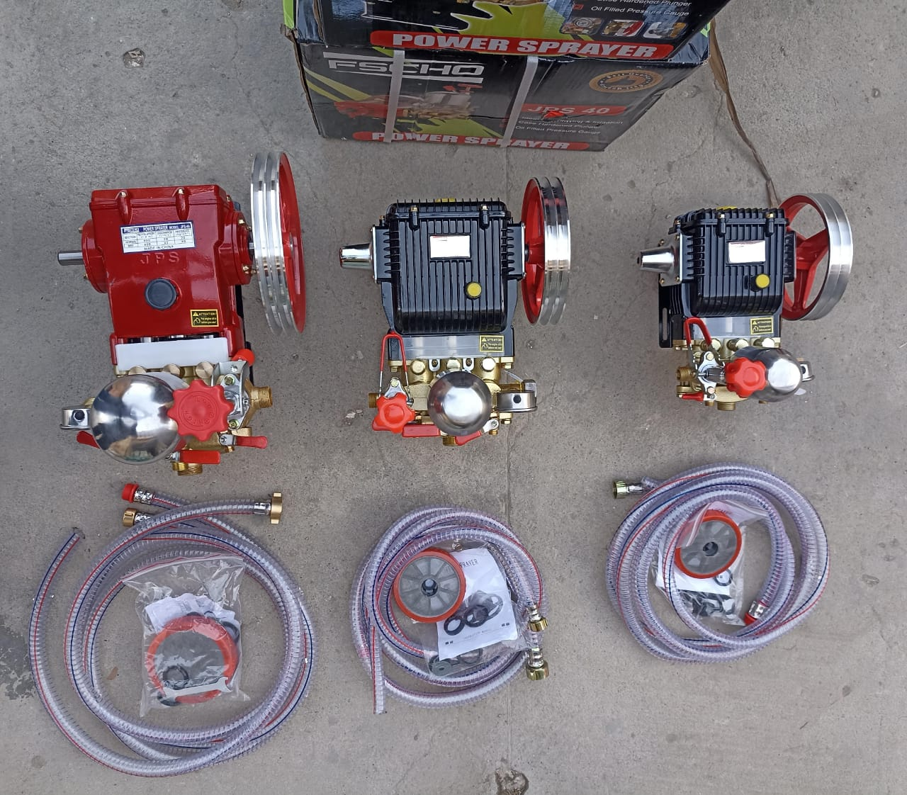

Motorized Sprayers
Motorized Sanitizing Sprayers with Accessories
This group is better suited to larger areas and repeated sanitation work, while also showing the hoses and related accessories that come with the set.
- Suitable for wider and more continuous sanitation work
- Shows the full set instead of only the main unit
- Useful for customers who need stronger operation than manual use